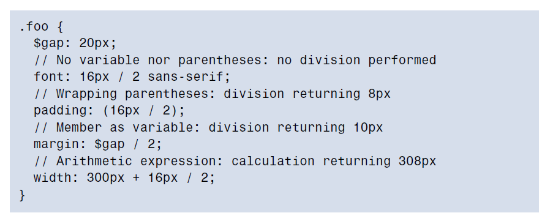

Sass - A stylesheet language that is an extension of CSS.
Sass
Sass is a preprocessor. It takes Sass (.sass) or SCSS (.scss) files as
input, and outputs CSS files (.css).
Sass can—and does—add features that enhance our writing of
CSS; however, it does not—and cannot—add features to CSS itself.
Sass Benefits
i.No need to remember specific css values,with pre-processors you use variables,change variables value and change will occur in whole website
ii.No long CSS stylesheet or additional HTTP requests
iii.increased page load times by splitting up your CSS files to several files such as
reset.css, mobile.css, tablet.css, desktop.css and print.css.
iv.easier way to write CSS media queries, ems or rems units
With Sass, you write variables, functions, nested code(Nesting is a feature of preprocessors
that allows us to write rule sets inside of other rule sets.), mixins, math then import all css
files into one file after which the preprocessor automatically converts it into one CSS.
Sass makes it easier for you to develop websites and web applications—benefiting you, your client, and your client users.
Sass Variables
A Variable a way to store a value with an identifier (variable name) that we can re-use
over and over in our code.
Variables give authors the ability to store bits of content so
that they can be reused throughout the stylesheets. This is especially handy for
colors: one can avoid having countless hues of the same color after a long time spent
working on a project. Variables can also be helpful for storing other types of content
such as font lists, maps of breakpoints, and default asset paths—presumably anything
that you may want to use multiple times across the stylesheet, particularly those
that could be updated at a later point.
Why use preprocessor variables? There are no inherit browser support considerations(unlike native css variables/properties).
They compile down into normal CSS.
A variable in Sass always starts with a dollar sign ($), whether you are using it for
assignment or retrieval.
$first-color-variable: red;
To use the variable:
.inside-text { color: $first-color-variable }
NOTE: Dashes + Underscores = Same :
$my-variable and $my_variable actually refer to the same location.
dash or underscore is a matter of preference, not syntax. The rationale is that the separator is a stylistic preference, not a meaningful one.
Sass Data Types
The 7 sass data types include:
i. string (e.g. "Hello world", kittens) - which can be in quotes or not depending on use-like font type no quotes needed.
Strings can be concatenated (joined together) using the plus symbol (+).,
String variables are useful for storing some CSS values, property names, or identifiers,
such as sans-serif, left, or margin-bottom.
ii. number (e.g. 42, 1337px) - a number in Sass can—but does not necessarily—
have a unit, like 42px.NOTE: both 42 and 42px are numbers, while 42 px and px42 are strings.
Width of the container (for example, 1180px) and number of columns
in the grid system in use (such as 12) are good examples of numbers stored in sass variables
Sass supports the five basic operators: plus (+), minus (-), multiply (*), divide (/), and modulo (%).
iii. color (e.g. hotpink, rgb(1, 33, 7), #BADA55) -
Storing colors is probably the best use case for Sass variables, as maintaining a strict
and consistent color chart has proven to be a difficult challenge, especially in large
projects. By keeping frequently-used colors in variables, we save ourselves from
guessing and inventing new colors.
Sass adds more improvement to colors with Sass native color-manipulation functions,
such as darken(..), lighten(..), and mix(..). Eg: background-color: lighten($color, 20%);
CSS color keywords(red, green etc) are not recommended, unless for rapid prototyping.
iv. list (e.g. (a, b, c), a b c) - mostly act as a container.
lists are basically arrays when compared to other programming languages.
A Sass list is a collection of zero or more values separated by either spaces or commas.
Values from a list can be of any type, including list, leading to nested lists.
The first point to know about lists is that it's the delimiter (either spaces or commas,
known thanks to the list-separator(..) function) that makes a list, not the
wrapping parentheses.
Any two or more values separated by a space or a comma form a list.
E.g: $value: Hello world; or $value: ('Hello', 'world'); and single value list: $value: ('foo',);
v. map (e.g. (a: 1, b: 2)) - mostly act as a container also.
A map is a series of pairs of associated keys and values where keys are unique to each map.
You would use a list when you need an index (for instance, for the :nth-child(..)
selector), and a map when you need a key (such as a string).
keys of a map can be of any type and not just strings. Yes, lists and
maps as well, although they have to remain unique but its better to sticking to string keys.
vi. bool (true or false)
vii.null (null) - Note that it has to be lowercase and unquoted for it to be null type
null is commonly used to describe an empty value that will be filled later on, or
an empty state that's neither true nor false.
we can perform mathematical operations with numbers and colors,
but not strings. It is possible to run some specific functions on lists
and maps, but not on booleans and null values.
To know the type of a Sass variable, we use the type-of(..) built-in function.
Division operator in Sass

Units in Sass
Units are not just random strings living at the end of numbers,actually belong to the number.
To have 42px from 42, you need to multiply it by one member of the px
unit (1px). Similarly, to have 42 from 42px, you have to divide it by one member of
the px unit (1px):
Creating Meaningful Variables
As CSS is a language that is essentially
hyphenated (rare exceptions mistakes aside), I recommend that you stick to this
convention: use hyphens to separate words within your variables names rather than
underscores or camel case.NOTE: Sass does not support actual constants, if used, then uppercase letters separated with underscores.
It’s also best to avoid naming your variables after the way they’re used such as
$border-color, or $blockquote-margin. While it might sound handy at the time,
sooner or later you will use those variables for completely different purposes, and
you’ll be left with a name that makes little sense, or is misleading even. This is why
it’s advisable not to be too specific with your variable names.
Sass variables and CSS custom properties both serve the same purpose,
but are fundamentally different in their approach. Because CSS custom properties
still exist when in the browser, they allow some features that Sass variables will
never be able to reach.
Functions and Mixins
Functions
In Sass, a function definition starts with @function, then the name of the function,
then a pair of parentheses—possibly but not necessarily containing parameters passed to the function.
A Sass function returns a result through the @return directive. Note that it must contain
at least one return statement, or else an error is thrown.
Example:
@function get-base-url() { @return '/assets/';} and @function multiply($a, $b) { @return ($a * $b); }
NOTE: functions cannot be defined within mixins or other functions.
Use of Sass Functions
More often than not, functions are used as CSS values; however, they can be useful
in other circumstances. Actually, functions can be used anywhere variables can so
within selectors, media queries, properties, values, and inside variables, functions,
mixins, and so on. Although, like variables, they might need to be interpolated
Native Functions; Sass provides a lot of built-in functions to make writing styles an
easier task. These include lighten(..) and darken(..), or lists and maps with length(..) etc.
Mixins
Basically a mixin is a function that can output code rather than return
a result (more like a react functional component).
These allow us to define collections of reusable css snippets.
While a function is a good way to abstract a repeated operation based on
parameters, a mixin is a terrific way to abstract repeated style patterns—all with
the ability to adapt the output based on parameters.
A mixin can be defined anywhere but inside a function or another mixin. To define
it, there’s the @mixin notation. As for the function declaration, the name of the
mixin comes right after it, and then the parameters (if any). Unlike functions, when
mixins have no parameters, the parentheses are optional. Example:
@mixin center { width: 100%; max-width: 1180px; margin-left: auto; margin-right: auto; }
Calling a Mixin, use @include keyword
.container { @include center; }
Mixins Parameters:
Most of the time, mixins will accept parameters since this is where they really kick
in. These parameters can have a default value like with functions.
Mixins @content directive
The @content directive—which has no other form than simply @content—allows
authors to pass block of styles to their mixins.
The @content directive is useful when building dynamic
selectors or context blocks, such as @media or @supports.
Mixins and functions are helpful tools to abstract parts of your code in order to
avoid repetitions. Both can have parameters—mandatory or optional—if they have
a default value. Just remember the difference between the two: a function returns
a value, while a mixin outputs CSS code.